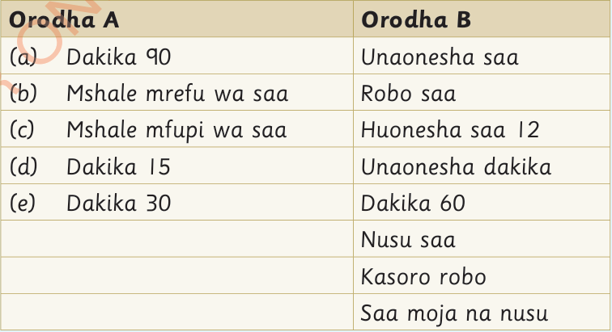

(a) Saa sita na robo (6:15)
Zoezi la marudio
1.
Chora nyuso za saa ya mshale kuonesha muda ufuatao:
(b) Saa kumi kamili (10:00)
(c) Saa mbili na nusu (2:30)
(d) Saa tatu na dakika arobaini na tano (3:45)
2.
Andika muda ufuatao kwa maneno:
(a) 12:15
(b) 1:00
(c) 11:30
(d) 2:00
(e) 8:15
(f) 10:15
(g) 1:20
(h) 2:45
3.
Chagua maneno kutoka orodha B na yaandike katika orodha A ili yalete maana sahihi:

Orodha A
(a) Dakika 90
(b) Mshale mrefu wa saa
(c) Mshale mfupi wa saa
(d) Dakika 15
(e) Dakika 30
Orodha B
Buruta jibu, au lichague kisha uchague eneo lake katika Orodha A.
Saa moja na nusu
Unaonesha dakika
Unaonesha saa
Robo saa
Nusu saa
Maneno ya ziada
Huonesha saa 12 · Dakika 60 · Kasoro robo
Orodha A na Orodha B